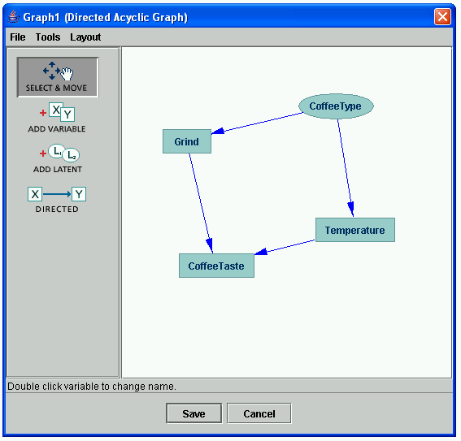

Measured Vs. Latent Variables |
Variables in Tetrad are of two types: measured and latent. Measured variables (often called "observed" variables) are variables for which data have been measured. Latent variables are variables for which data has not been measured but which you believe might be required to explain the causal relationships between measured variables adequately.
We represent measured variables in graphs using rectangular boxes around their variable names and latent variables using oval shapes around their variable names. In the example below, Grind, CoffeeTaste, and Temperature are measured variables, while Freshness is a latent variable.
We would expect data sets for these variables to contain columns only for Grind, Temperature, and CoffeeTaste, although causal models for such data might include extra latent variables such as Freshness, in this example.
A latent variable that is a parent of two or more measured variables is referred to as a latent common cause (or unmeasured common cause), as for example CoffeeType in the picture below:
